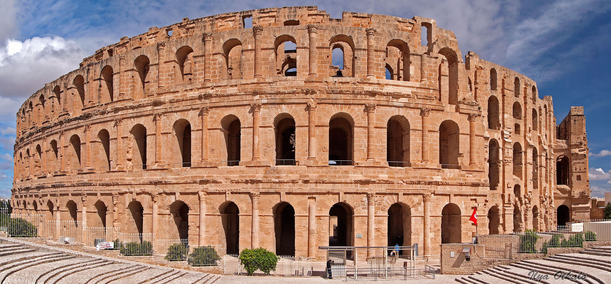

×

Tunisia
Климат
Субтропический средиземноморский на севере и вдоль побережья, на юге и во внутренних районах - тропический пустынный.
Средние температуры января на севере +10°С, на юге +21°С, июля - +26°С и +33°С соответственно. Летняя жара на побережье смягчается морским бризом, поэтому субъективно кажется несколько прохладнее, чем есть на самом деле. В пустынных районах ночью нередки заморозки даже весной и осенью, хотя днем температура в этот период может достигать +25-27°С.
Осадков (в основном - в виде дождя) выпадает от 100 мм в год на юге и до 1500 мм - в горных районах, хотя некоторые пустынные области вообще не получают их в течение многих лет подряд.
____